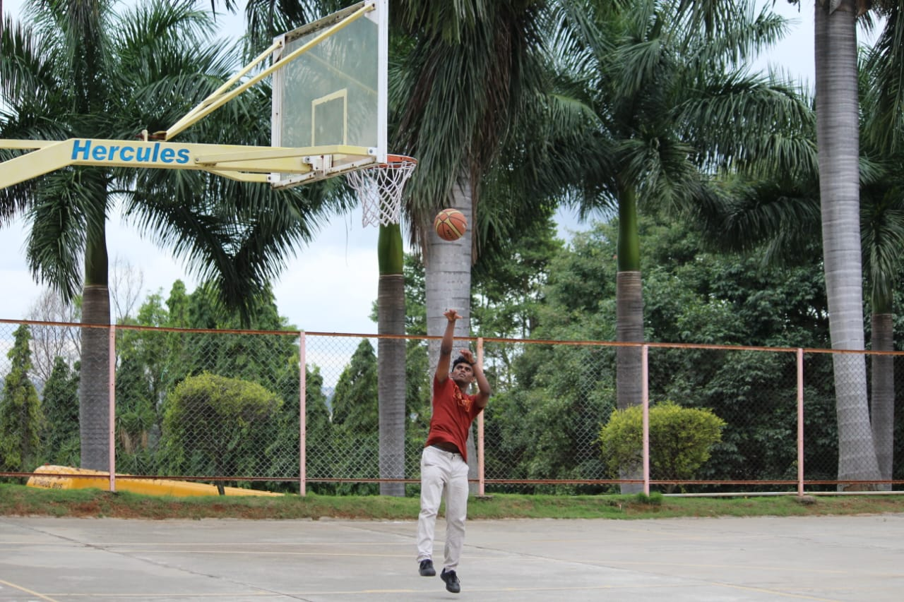

My Sports Interests


Sports has become a major part of my life. Through out my childhood, I played various sports like football, cricket, badminton, lawn tennis and basketball. Being the sports captain in school, I lead the football team in various tournaments. Basketball is my main interest. I represented my club in various tournaments in the state level, winning 1st place in many of them.
- Copyright @ 2022 Sandeep Sreenivasan
- All rights reserved